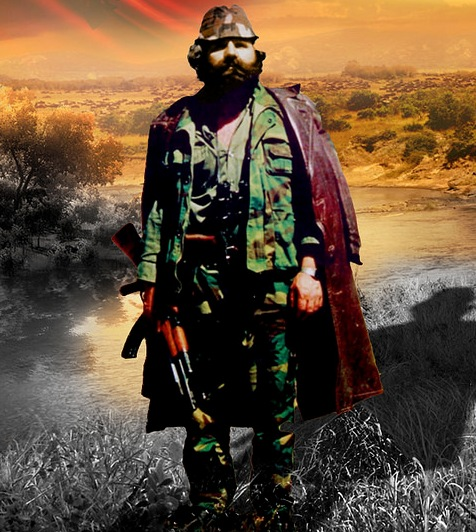

Kush ishte "Adem Jashari"
"Adem Jashari" lindi në fshatin Prekaz, komuna e Skënderajit, e cila i përket rajonit të Drenicës,
më 28 Nëntor 1955. Ai ishte një nga arkitektët kryesor të Ushtrisë Çlirimtare të Kosovës duke qënë
gjithashtu edhe kryekomandanti i saj.
Së bashku me të vëllain e tij Hamzën, Ademi ka marrë pjesë në sulmet kundër forcave policore-ushtarake serbe.
Forcat policore jugosllave dhe Ushtria Jugosllave e sulmuan shtëpinë e tij në mars të vitit 1998, ku Jashari
heroikisht ra së bashku me pesëdhjetë e gjashtë anëtarët e familjes së tij. Ky është rast unik në historinë e
luftërave.
Ai mban titullin "Komandanti Legjendar i UÇK-së", ndërsa titulli "Hero i Kosovës" iu dha atij
në vitin 2008 nga kryeministri i Kosovës.
Rreth shkollës sonë
Shkolla e mesme e ulët "Adem Jashari" e cila mbanë me krenari emrin e "Komandatit Legjendar", u themelua në vitin 2001 dhe mbarvajtjen e procesit mësimor
e filloi po në këtë vit, për herë të parë në muajin shtator.
Si njëra ndër shkollat e para të ndërtuara pas luftës çlirimtare, shkolla jonë falë mirë-organizimit të brendshëm kapi hapin e
rrjedhjesë së procesit mësimorë të shkollave të tjera të cilat vetëm se kishin qenë funksionale edhe para vitëve të 2000-ta
dhe të cilat kishin përvojë në fushën e arsimit.
Drejtori i parë i kësaj shkolle ishte "Ramadan Ilazi", i cili shquhej për vlerat e tij të larta njërzore dhe për aspektin intelektual, si njëri
i cili i priu kësaj shkolle që në hapat e parë të sajë, atëherë kur gjendja ekonomike dhe sociale ishte e brisht, ai me gjindshmërinë e tij
u'a bëri të mundur banorëve të kësaj zone që edhe ata të kenë se ku t'i edukojnë dhe arsimojnë fëmijët e tyre qysh në
moshën me "delikate" të tyre.
Në fillim të funksionimit të saj, shkolla përbëhëj nga një numër relativisht i vogël i stafit (mësimëdhënës, punëtorë
teknik) por që me kalimin e kohës u rriten kapacitet dhe tanimë shkolla numëron një staf të mësimëdhënësve prej 70-et arsimëtarëve të cilët janë të angazhuar si në mbarvajtjen e procesit mësimorë të ciklit të ulët dhe ciklit të lartë, ndërsa numri i nxënësve që vijojë mësimin në hapësirat e shkollës sonë varion çdo vit nga 500 deri në 600 nxënës.
Drejtor aktual i shkollës është Agim Berisha, i cilit dallohet për karakterin e "fortë" njërzorë dhe intelektaul.
Duke ju falënderuar gjithë stafit, shkolla jonë ka marur pjesë në gara lokale, komunale dhe rajonale ku sukseset nuk kanë munguar, duke përmedur
këtu garën lokale e cila është mbajtur në komunen tonë në vitin 2007 për nxënësit e klavase të 6-ta, ku shkolla jonë
rrëmbeu çmimin e parë, duke u shpallur si shkolla më e mirë e komunës. Po ashtu në gara komunale të klasave të 8-ta të mbajtura në
maj të vitit 2010 shkolla jonë prap mori çmimin e parë dhe doli fitimtare, ndërsa në garat rajonale të mbajtura në Shqipëri në prill
të vitit 2014, shkolla jonë u rendit si shkolla e tretë nga shkollat e rajonit, i cili sukses ngërthen në vete shumë punë, angazhim,
përkushtim dhe është një sinjal i qartë që jemi duke përparua në hapa të sigurt për t'u bërë shkollë model!
Te gjitha te drejtat e rezervuara